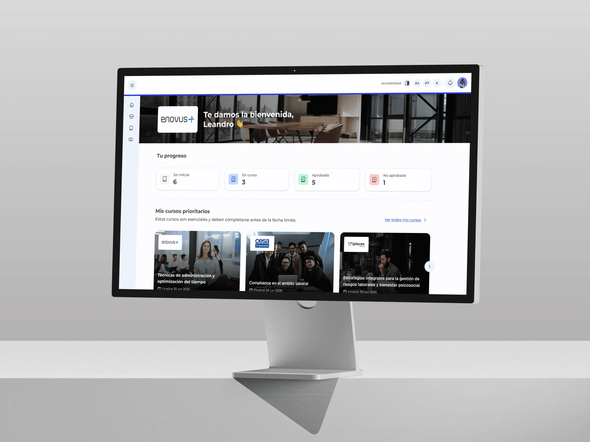
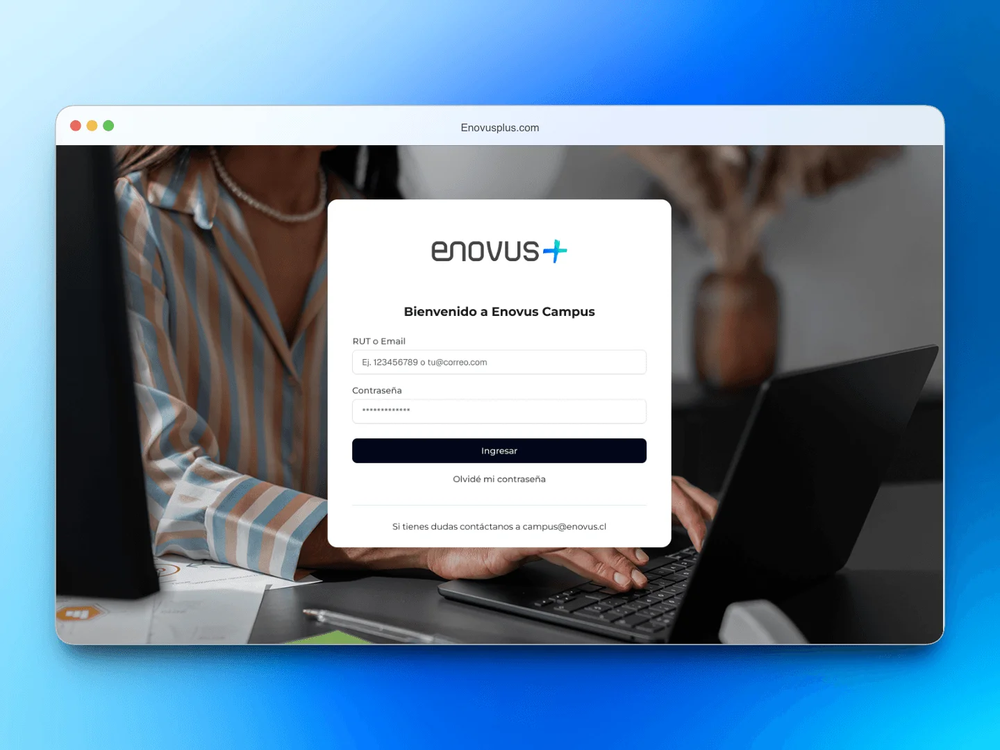
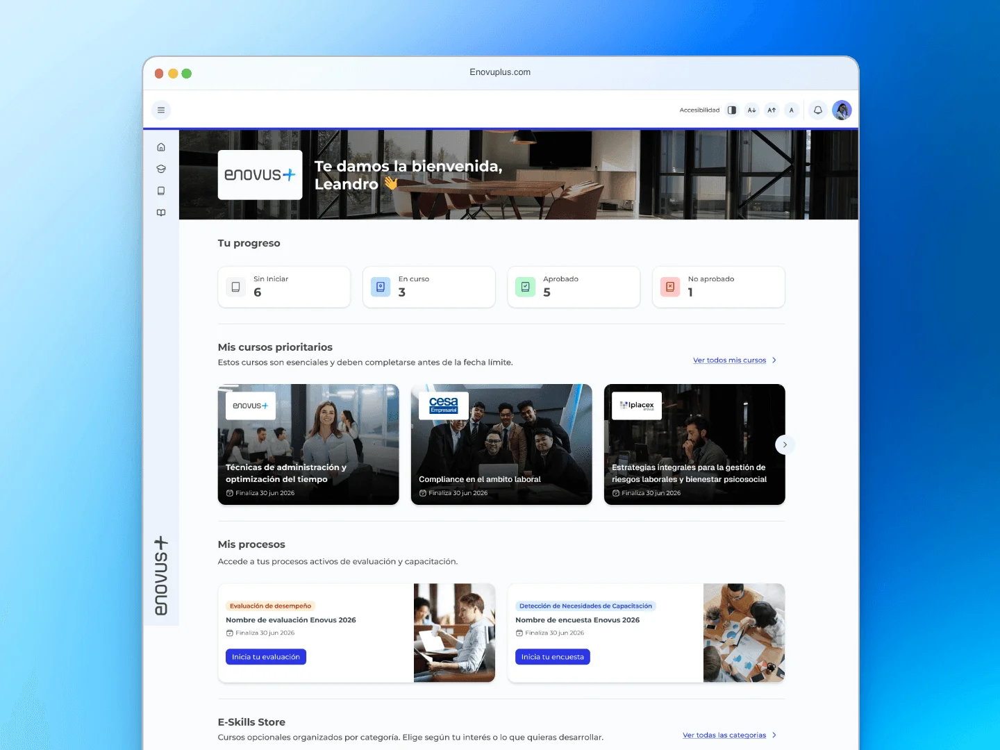
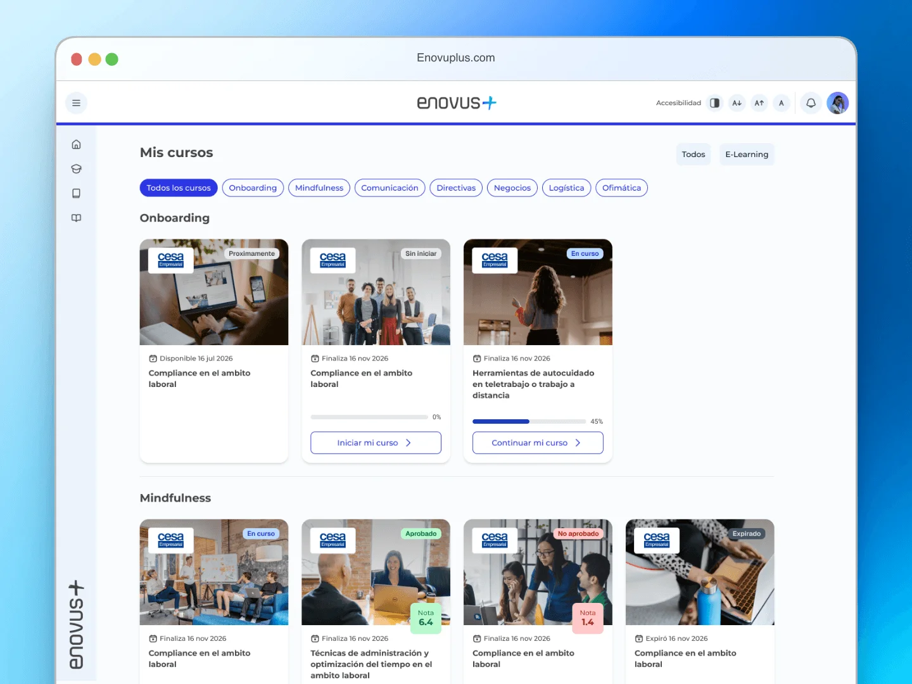

Enovus+ LMS
Enovus+ es la plataforma de formación corporativa del Grupo Enovus: más de 100 empresas clientes y un catálogo de más de 250 cursos, operando en Chile y Colombia. Entré como su primer diseñador UX/UI, sin sistema de diseño, sin archivos de diseño y sin datos de uso. El punto de partida era el producto que ya estaba en producción.

El problema
La plataforma no fallaba: no orientaba. El alumno entraba y veía todos sus cursos con el mismo peso visual, sin ninguna señal de por dónde empezar ni qué era urgente. La navegación funcionaba, pero obligaba a explorar para entender.
En formación corporativa eso se paga en abandono, y se paga dos veces: el cliente que compró la capacitación no ve el retorno, y Enovus se juega la renovación en ese número.
Debajo había un segundo problema: no existía registro de nada. Ni sistema de diseño, ni archivos de las pantallas, ni métricas de uso. Cualquier decisión tenía que salir de lo que estaba en producción y de hablar con quien lo usaba.
Qué hice
- Auditoría UX
- Diseño de producto
- Arquitectura de información
- Sistema de diseño
- Componentes y tokens
- Interfaz
Herramientas
- Figma
- Maze
- Photoshop
- Jitter
- Cursor
- Claude
- ChatGPT

Qué hice
Empecé auditando los seis módulos críticos para localizar dónde estaba la mayor fricción. Prioricé los flujos transversales (login, home y mis cursos) por encima de módulos más complejos como EDD, DNC y Clima. La renuncia fue deliberada: EDD acumulaba más peticiones internas, pero solo lo toca una parte de los alumnos; login y home los atraviesan todos, sin excepción.
Sin datos de uso, validé por testeo: cada flujo que modificaba lo probaba con usuarios antes de darlo por bueno. Fue más lento que decidir por criterio propio, y era la única forma de no estar adivinando.
El home dejó de ser una pantalla pasiva para ordenarse por prioridad: los cursos que el alumno debe tomar primero ocupan el mayor peso visual, los indicadores bajaron a cuatro estados reales, y el color pasó de decorativo a código: gris sin iniciar, azul en curso, verde aprobado, rojo no aprobado.
También lo hice modular: si un alumno no tiene un EDD activo o no le aplica una recomendación, esa sección no aparece. Una sección vacía siempre genera una pregunta sin respuesta, así que preferí ocultar lo que no aplica antes que mostrar espacios en blanco.
En paralelo levanté el sistema de diseño desde cero: componentes, tokens y patrones pensados para escalar entre módulos y entre los dos mercados donde opera Enovus.

El resultado
El tiempo que tarda un alumno desde que entra hasta que empieza su primer curso bajó un 64%, y los tickets de soporte del tipo "no sé por dónde empezar" cayeron un 82%. El home dejó de ser una pantalla que había que interpretar.
Login, home, mis cursos, EDD, DNC y Clima están en producción en Chile y Colombia, sirviendo a más de 100 empresas clientes. El sistema de diseño es hoy la base con la que el equipo mantiene consistencia entre módulos y mercados, y la referencia para lo que viene: la vista de Administrador.
Entré como el primer diseñador de un producto que llevaba años funcionando sin uno. Lo que queda no es solo la plataforma rediseñada: es un criterio de diseño documentado que el equipo puede seguir aplicando sin mí al lado.
